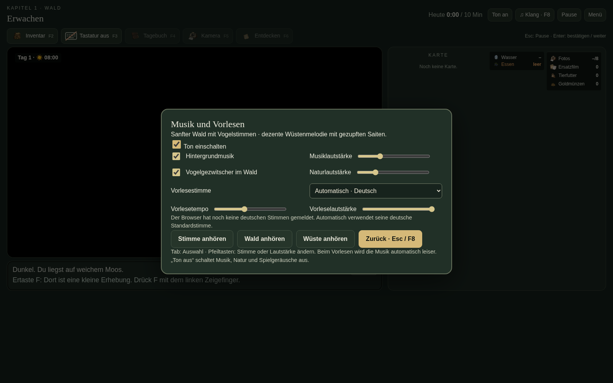

Zwei kurze Ausschnitte aus der neuen Spielfassung. Im Spiel lassen sich Musik und Vogelstimmen getrennt einstellen.
Sanfte Saiten und Flöte mit vereinzelten Vogelrufen.
Dezente orientalisch angehauchte Melodie mit gezupften Saiten.
